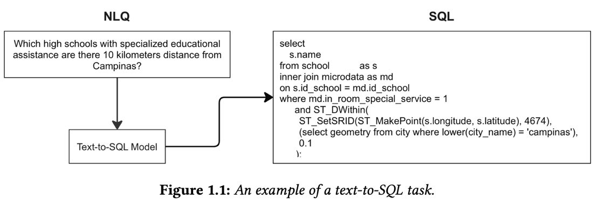

Automated Translation of Natural Language Geospatial Queries into SQL
This project develops a fine-tuned LLM to translate natural language queries into geospatial SQL, addressing current text-to-SQL limitations.
Introduction
The capability to utilize databases is fundamental and present in most applications worldwide. However, constructing database queries often requires specialized knowledge of query languages like SQL, which can pose a barrier for users who lack technical expertise. This gap between natural and query languages has led to the development of technologies that simplify database interactions, making them more accessible to a broader audience.
Among these technologies, text-to-SQL systems have gained significant attention. A text-to-SQL system is designed to generate a SQL query from a natural language query (NLQ) on a Relational Database (RDB) with a specific schema (Katsogiannis-Meimarakis and Koutrika, 2023). The resulting query should be semantically equivalent and valid for the given RDB. When executed, results should be produced that match the user’s intent. An example of this task is illustrated in Figure 1.1.

These systems allow users to generate SQL queries directly from natural language inputs, eliminating the need for advanced technical skills while maintaining the precision and efficiency required for database operations. Text-to-SQL is a rapidly evolving field within Artificial Intelligence (AI) and Natural Language Processing (NLP), with the potential to democratize access to data and drive more informed decision-making.
Objectives
This master’s project aims to improve access to georreferenced data of public interest by developing a fine-tuned LLM that excels in translating natural language queries into SQL for geospatial databases. A key component of the project is the creation of a Brazilian Portuguese dataset specialized in geospatial queries tailored to CulturaEduca’s data.
This dataset will include diverse examples of geospatial queries that perform operations such as checking whether one area is inside another (e.g., determining if a city is within a state or a neighborhood is within a city), creating a surrounding zone around a location (e.g., defining a buffer area around a river or a landmark), or identifying spatial relationships between different regions (e.g., assessing whether two areas overlap or touch). In real- world scenarios, these geospatial operations manifest in queries like: “Which schools are located within the municipality of Campinas?” illustrating spatial containment; “List the museums within a 2 km radius of Avenida Paulista,” representing the creation of a buffer zone around a point of interest; and “Which neighborhoods border the Liberdade district?”, demonstrating the identification of spatial relationships such as intersection or adjacency. These examples reflect standard geospatial analysis needs in public datasets.
To achieve its goals, the project will involve multiple phases:
- Curating the dataset: Create a Brazilian Portuguese dataset specialized in geospa- tial queries;
- Fine-tuning the model: Fine-tune existing LLMs for the text-to-SQL task using the specialized queries;
- Evaluating the model’s performance: Evaluate the model focusing on the accu- racy of the translated queries and their effectiveness in real-world scenarios.
Expected Contributions
By bridging the gap in geospatial query translation to natural language, the project will enhance CulturaEduca’s data accessibility for non-expert users. Implementing a fine-tuned LLM model specialized in geospatial data and creating a Brazilian Portuguese dataset specialized in geospatial queries will contribute to the capability to work with text-to-SQL tasks in the context of geospatial data. This research will provide a reference point for geospatial SQL translation systems’ accuracy and real-world applicability, establishing metrics to evaluate the performance of LLM models and offering a replicable methodology for fine-tuning LLMs in specialized domains, potentially applicable to other languages and technical areas.
Achieved Results
Experiments in progress…